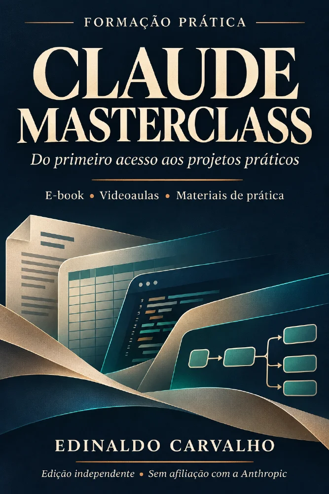

O relatório começa sempre do zero?
Aprenda a dar contexto, definir uma estrutura e revisar documentos com finalidade e critérios claros.

E-book + videoaulas de apoio + materiais de prática
Aprenda a usar o Claude para escrever documentos, trabalhar com planilhas e desenvolver ferramentas — com contexto, prática e revisão.
Uma formação independente para sair das tentativas soltas e construir um jeito mais organizado de trabalhar com IA.
Quero conhecer o Claude MasterclassR$ 97 · Produto digital · Estude no seu ritmo
Não basta receber uma resposta bem escrita. Você precisa entender o pedido, avaliar o resultado e saber o que corrigir.
Aprenda a dar contexto, definir uma estrutura e revisar documentos com finalidade e critérios claros.
Estude fórmulas, indicadores e testes de alteração para identificar erros antes de confiar nos números.
Siga uma trilha progressiva: das primeiras conversas a procedimentos e laboratórios de ferramentas.
O conteúdo combina explicação, exercício e critérios de conferência. O objetivo é desenvolver competências que você possa aplicar e revisar no próprio contexto profissional.
Defina tarefa, contexto, restrições e formato de saída.
Pratique com textos, documentos, planilhas e projetos de referência.
Use exercícios, gabaritos e critérios para revisar antes de utilizar.
12 módulos e 60 aulas escritas. Comece pelo seu nível e avance com os pré-requisitos de cada trilha.
Módulos 1 a 7 · Aulas 1 a 35
Conversas, textos, documentos, planilhas e calculadora HTML. Sem terminal no percurso proposto.
Noções de navegador e arquivos. Computador e editor de planilhas para a prática completa.Módulos 8 e 9 · Aulas 36 a 45
Skills, procedimentos e fluxos com permissões. Alternativas manuais quando o recurso nativo não está disponível.
Requer domínio de arquivos e revisão de saídas, ou a trilha anterior.Módulos 10 a 12 · Aulas 46 a 60
Claude Code, fontes locais, API e projetos com critérios de entrega.
Exige computador, Python 3.10+, terminal e experiência equivalente às trilhas anteriores.Abra sua conta, conheça os ambientes e pratique o ciclo pedir, conferir, corrigir e guardar.
Aulas 1 a 5 · InicianteEscreva prompts com critérios de saída, organize arquivos e mantenha contexto em Projects.
Aulas 6 a 10 · IniciantePesquise com fontes e datas, compare alternativas e prepare textos e reuniões.
Aulas 11 a 15 · InicianteTrabalhe com Word, extração de PDF, apresentações, modelos e revisão editorial.
Aulas 16 a 20 · InicianteEntenda entradas, fórmulas, indicadores e testes em um controle financeiro.
Aulas 21 a 25 · IniciantePrepare dados, confira duplicatas e construa um relatório de vendas verificável.
Aulas 26 a 30 · IniciantePlaneje ferramentas interativas e estude uma calculadora executável em HTML.
Aulas 31 a 35 · InicianteEstruture procedimentos com referências e exemplos e aprenda a testá-los.
Aulas 36 a 40 · IntermediárioEstude organização de arquivos, conectores, permissões e rotinas acompanhadas.
Aulas 41 a 45 · IntermediárioPrepare o terminal e desenvolva por incrementos o laboratório Gestão Clara.
Aulas 46 a 50 · AvançadoEstude autenticação, consulta de fontes locais, API opcional e limites de integração.
Aulas 51 a 55 · AvançadoDefina problema, escopo, preço, critérios de entrega e próximos passos do seu portfólio.
Aulas 56 a 60 · AvançadoConta, assinatura Claude, créditos de API, hospedagem e serviços externos não estão incluídos. Skills, Cowork e Claude Code têm requisitos e condições próprios. As alternativas manuais não equivalem ao uso nativo desses recursos.
Ver a oferta de R$ 97Projetos descritos no PDF e no guia do pacote. Conheça a finalidade de cada exercício.
Preparação de dados, duplicatas, rejeições e conferência de totais. Aprenda a transformar uma análise em um procedimento repetível.
Módulo 6 · Relatório e análiseLaboratório local de clientes e propostas. Estude regras, persistência de dados e cuidados antes de pensar em publicação.
Módulo 10 · Python e terminalEntenda uma busca por palavras com identificação de origem. O modo local não é um modelo de linguagem; a API é opcional.
Módulo 11 · Fontes e integraçõesEstude o Controle Inteligente e uma calculadora no navegador: entradas, fórmulas, resultados e testes de alteração.
Módulos 5 e 7 · Planilhas e ArtifactsNesta prévia, os projetos são apresentados a partir da documentação. Os arquivos executáveis do pacote completo ainda precisam ser conferidos; não há demonstração funcional disponível nesta página.
Estude o conteúdo, pratique em cópias e compare suas entregas com as orientações do material.
Entenda como estudar →Curso, biblioteca com 50 prompts e 10 Skills descritas, referência visual da planilha e certificado preenchível.
Com voz sintética e transcrições, conforme os materiais. Vídeos são apoio às 60 aulas escritas, não 60 videoaulas.
Resumos, exercícios autorais e critérios de conferência. Algumas referências externas estão em inglês.
Atividades para revisar o entendimento. Certificado em modelo preenchível, sem acreditação oficial.
O produto é composto por PDF e materiais complementares. A plataforma, o prazo de acesso e o fluxo de entrega serão confirmados antes da abertura das vendas.
Abra o PDF e leia o guia Comece Aqui. No computador, extraia o pacote completo e abra a biblioteca do aluno.
Pratique em cópias, confira os resultados e registre correções. Celular para leitura e atividades compatíveis; computador para a prática completa.
Um percurso de estudo para trabalhar com documentos, planilhas, processos e ferramentas com mais clareza e critério.
Assinaturas, API e serviços externos são contratados separadamente. O aprendizado depende da prática; não há promessa de renda ou de resultados automáticos.
Valor do produto digital
R$ 97,00
Uma formação. Três trilhas para avançar.
Vendas ainda não disponíveis. Os links oficiais de pagamento serão adicionados antes do lançamento.
Entrega, prazo de acesso, condições de cancelamento e suporte precisam ser confirmados pelo produtor.
Não para começar a trilha iniciante. Você precisa de noções de navegador e arquivos. As trilhas intermediária e avançada têm pré-requisitos próprios.
Você pode ler, assistir aos vídeos disponíveis e fazer atividades de chat compatíveis. A prática completa com arquivos e planilhas exige computador; os laboratórios Python também.
Não. Conta, assinatura, créditos de API e serviços externos são separados. Recursos como Skills, Cowork e Claude Code dependem de acesso elegível. Há alternativas manuais descritas no material, que não equivalem ao uso nativo.
Não. São 60 aulas escritas em 12 módulos, com dez videoaulas próprias de apoio indicadas nos materiais. A reprodução dos vídeos ainda precisa ser validada no pacote completo.
O pacote contém um modelo preenchível, sem acreditação oficial. O percurso e a carga horária registrados devem refletir os estudos efetivamente realizados.
São laboratórios locais de aprendizagem. Não incluem hospedagem, implantação comercial ou operação. Os arquivos completos ainda precisam ser conferidos para esta página.
O estudo utiliza PDF e um pacote complementar. O canal de entrega, o prazo de acesso e as condições de suporte serão confirmados pelo produtor antes da liberação dos botões de compra.
As condições comerciais e o canal oficial de atendimento ainda estão pendentes. Consulte a seção de suporte e os termos antes de comprar quando a oferta for liberada.
Conheça o percurso para produzir, revisar e aprender com IA.
Ver o Claude Masterclass · R$ 97